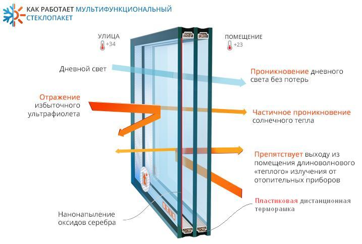
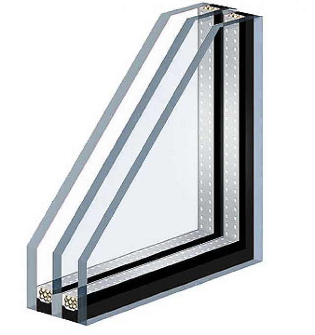
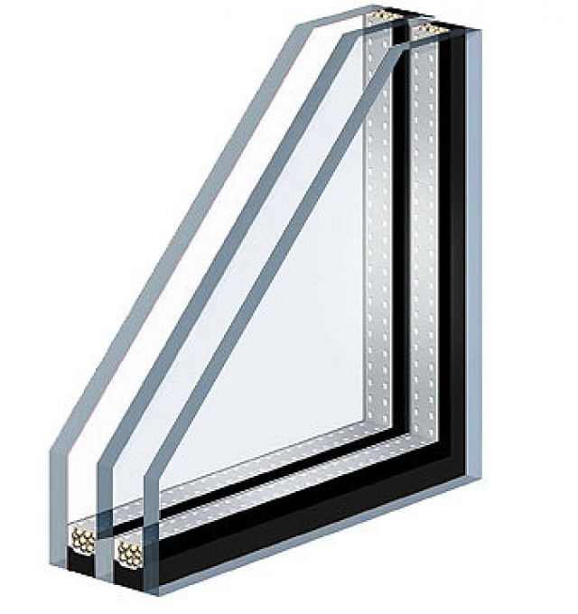
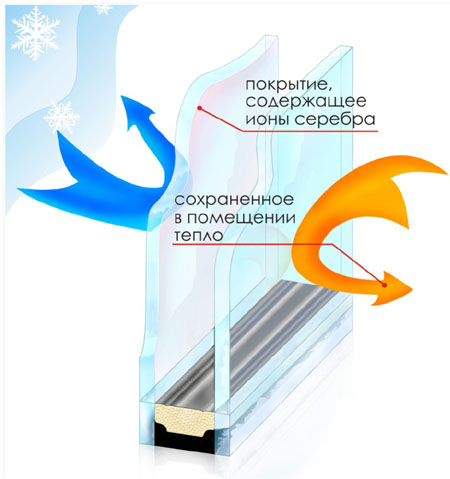
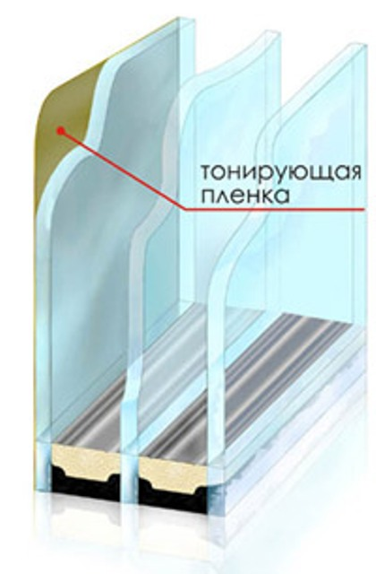
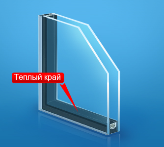
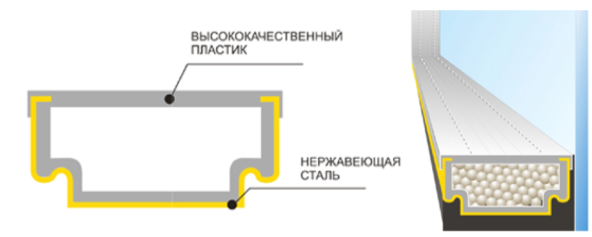
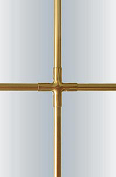
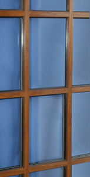
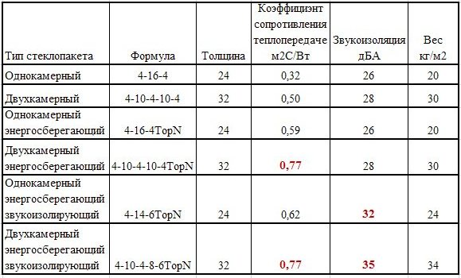

| Главная | Суббота, 24.06.2023, 14:45 | |||
окна "под ключ" двери балконы лоджииОКНОФФ8 (812) 716-76-17 | ||||
СТЕКЛОПАКЕТЫСтеклопакеты для наших окон изготовлены из борского стекла класса М1 компнией «РСК»в соответствии с ГОСТом 111-2001.
Внизу страницы приведена сравнительная таблица характеристик стеклопакетов по шумо- и теплоизоляции. В зависимости от ваших пожеланий компания «Окнофф» может предложить Вам:
Новинка!
Мультифункциональные стеклопакеты
с климат-контролем

Однокамерные Двухкамерные
  
Энергоберегающие Тонированные
 
Энергосберегающее (низкоэмиссионное) стекло - это стекло с напылением оксида серебра, которое отражает инфракрасные лучи (длинноволновую область спектра излучения), т.е. тепловой поток, создаваемые отопительными приборами. Камера между стеклами в энергосберегающих стеклопакетах заполнена инертным газом – аргоном.
Стеклопакеты с "теплым краем"  Новая пластиковая дистанционная рамка обладает более низкой теплопроводностью, в отличие от обыкновенной алюминиевой. Металл быстро остывает и легко пропускает холод. Даже когда в помещении нормальная комнатная температура, по контуру остекления она может оказаться едва ли выше нуля. Когда температура опускается до точки росы (около 5,2 градусов для условий жилого помещения), выпадает конденсат. При дальнейшем снижении - конденсат превращается в лед. С пластиковой терморамкой риск выпадения конденсата значительно ниже. Это особенно актуально в условиях наших холодных зим. Стеклопакеты со шпроссами и фальш-накладками для декоративной расстекловки.  
Сравнительная таблица характеристик стеклопакетов по шумо- и теплоизоляции
 |
| |||